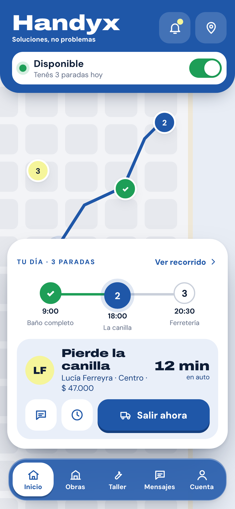

Colección HandyxDossier 03 de 04
03
Professional
App
Tu trabajo, tus precios. Una herramienta para trabajar mejor y crecer, no solo un canal para recibir clientes.
Diseño propuesto

Mar del Plata · Edición 1
Noviembre de 2026Estado al 07/11/2026
Noviembre de 2026Estado al 07/11/2026